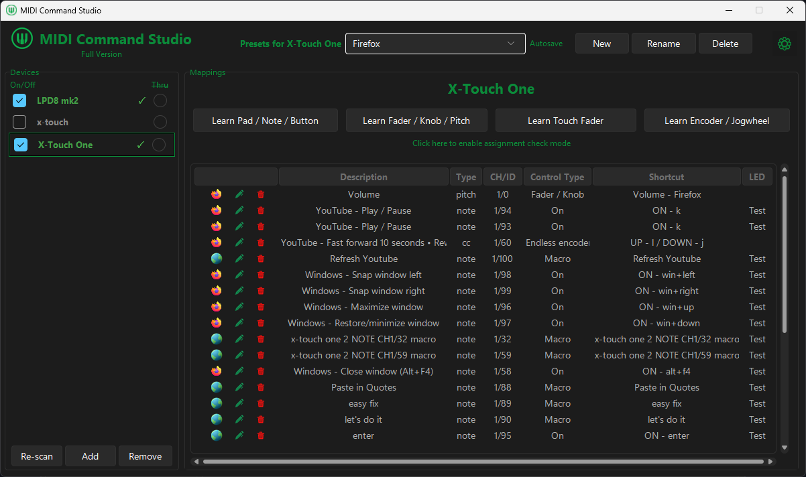

Browser & Windows
Control browser tabs, YouTube playback, Windows shortcuts, macros and app volume.
Map buttons, knobs and faders to shortcuts, macros, soundboard triggers, app volume and preset switching.
Windows 10/11 · Works with most MIDI controllers
Built for real Windows workflows
Switch presets and repurpose the same controller for browsers, streaming, editing tools, soundboards, media playback and everyday desktop shortcuts.
Create your own controller layouts for different Windows apps, then switch between them instantly.
Example workflows

Browser & Windows
Control browser tabs, YouTube playback, Windows shortcuts, macros and app volume.
MIDI Command Studio is more than a basic MIDI-to-shortcut app. It lets the same controller be configured for multiple Windows workflows, from shortcuts and macros to soundboard triggers, app volume targets and fast preset switching. That means one device can behave like several purpose-built control surfaces, without changing hardware. The free version can be tested with your own setup first, and if it already does what you need, you can simply keep using it.
Download · Features · Guides · Free vs Full · Help · Data & Privacy · FAQ · Contact
Step-by-step guides for common MIDI control workflows on Windows.
Understand how MIDI Command Studio can control OBS hotkeys, input levels, presets, and Mackie/MCU workflows.
Step-by-step setup for mapping MIDI controls to keyboard shortcuts on Windows.
Map a knob or fader to system volume and specific app volume targets.
Map MIDI controls to default or selected Windows input endpoints.
See how one-button macro workflows fit streaming, editing, browser, media, and desktop tasks.
Set up trigger buttons, stop mappings, and playback modes for sample control on Windows.
Configure MCU mode with LCD, LED, and motorized fader feedback for shortcuts, macros, and volume.
Control multiple volume targets with one motorized fader by switching presets.
Set up X-Touch One connection, presets, and motorized fader feedback on Windows.